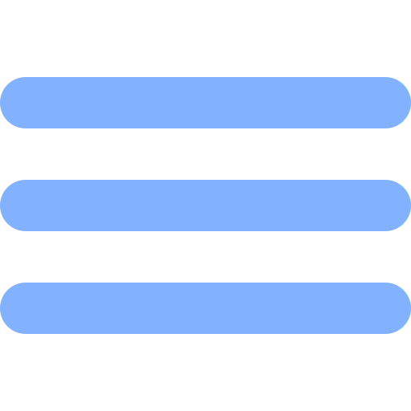

<body>
    <input type="checkbox" id="btn-menu"><label for="btn-menu"> </label>
  <nav class="menu">
    <a class="fade" [routerLink] = "['/about-me']">Sobre Mi</a>
    <a class="fade" [routerLink] = "['/projects']">Proyectos</a> 
    <a id="logo-link" [routerLink]="['/home']"></a>
    <a class="fade" [routerLink] = "['/skills']">Habilidades</a> 
    <a class="fade" [routerLink] = "['/contact-me']">Contactame</a> 
</nav>
  <div class="bg-image">
  </div>
</body>
  <router-outlet></router-outlet>
<footer>Diseñado por Franco Mariano Ormeño</footer>
